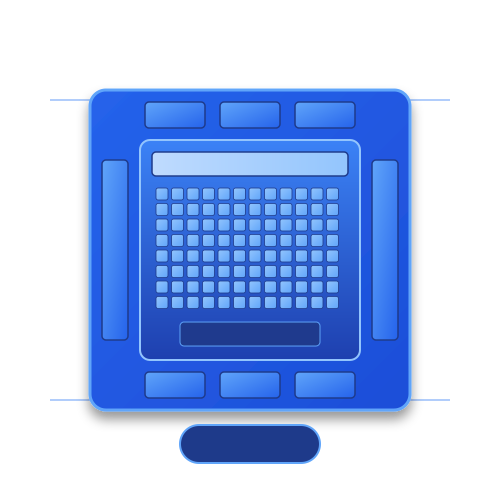
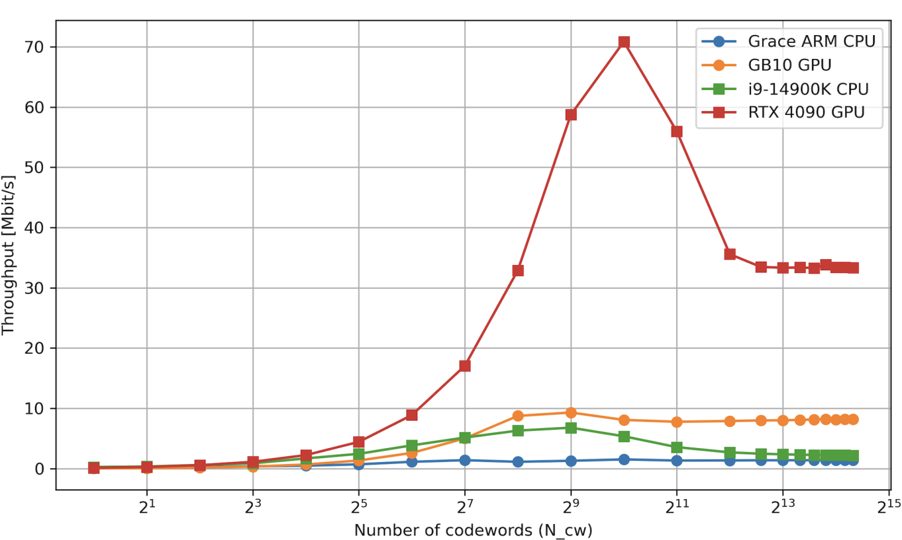
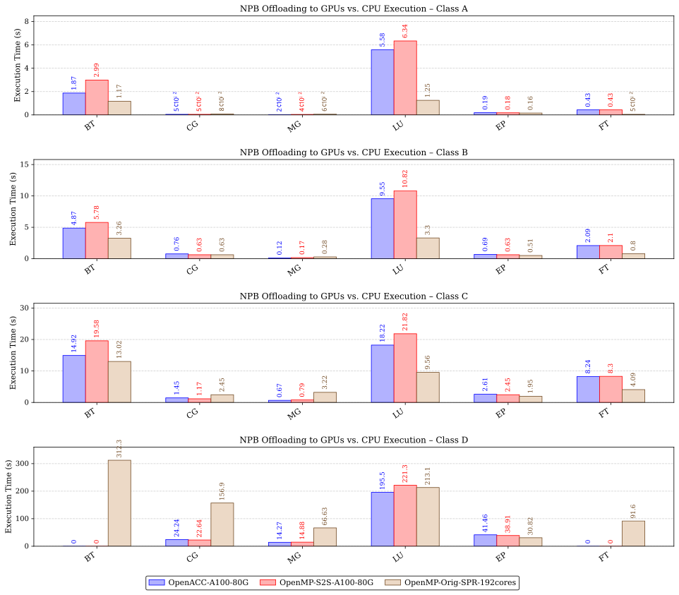
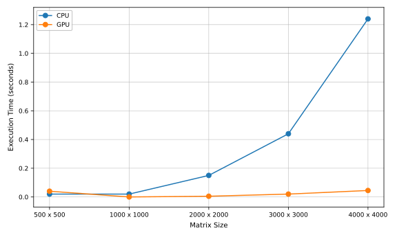

GPUs¶

Quote
Not our universe, not our ship. Something... parallel.
James T. Kirk, a fictional Star Trek character, episode 'Mirror, Mirror'
Goal¶
- Book a GPU on Bianca
- Search for GPU modules on Bianca
- (optional) Have an idea when to use GPUs
- (optional) To be fooled less likely by CPU versus GPU benchmarks
What are GPUs?¶
A GPU, short for 'graphical processing unit', can do calculations. GPUs do not need to be used for graphics, however. Instead, they are specialized in doing any type of parallel computation, such as, for example, matrix multiplications.
graph TB
cpu[CPU]
gpu[GPU]
cpu_features[Any operations]
gpu_features[Parallel operations]
cpu <--> |data transfer| gpu
cpu -.- cpu_features
gpu -.- gpu_featuresWhy use GPUs?¶
- Your calculation may go faster
- You have access to more GPUs than CPUs
How to schedule GPUs on Bianca¶
To start a 10-minute interactive session on 1 GPU:
To be able to schedule an hour, add --qos=normal:
What does that look like?
The output will look similar to:
[maja@sens2025560-bianca maja]$ interactive -A sens2025560 -C gpu
You receive the high interactive priority.
You may run for at most 12 hours.
Please note that in 12 wallclock hours this interactive job will use 192 core hours.
Please, use no more than 14 GB of RAM.
Waiting for job 679 to start...
After a while (I expect this to take 20 minutes) you will see:
_ _ ____ ____ __ __ _ __ __
| | | | _ \| _ \| \/ | / \ \ \/ / | System: sens2025560-b201
| | | | |_) | |_) | |\/| | / _ \ \ / | User: maja
| |_| | __/| __/| | | |/ ___ \ / \ |
\___/|_| |_| |_| |_/_/ \_\/_/\_\ |
###############################################################################
User Guides: http://www.uppmax.uu.se/support/user-guides
FAQ: http://www.uppmax.uu.se/support/faq
Write to support@uppmax.uu.se, if you have questions or comments.
[maja@sens2025560-b201 maja]$
What about other command line parameters?
This command:
is identical to:
# 15 minutes max
interactive -A sens2025560 -C gpu --gpus=1 --gpus-per-node=1 --qos=short --time=0:10:00
Note that there is a catch here: with --qos=short, one can maximally
schedule 15 minutes.
To schedule 1 hour, add --qos=normal:
# 1 hour max
interactive -A sens2025560 -C gpu --gpus=1 --gpus-per-node=1 --qos=normal --time=1:00:00
To schedule 12 hour, add --qos=interact:
# 12 hours max
interactive -A sens2025560 -C gpu --gpus=1 --gpus-per-node=1 --qos=interact --time=12:00:00
However, with --qos=interact there is no access to a GPU.
What does the --qos flag mean?
qos is an abbreviation of 'Quality of Service'. Each possible value
of --qos determines a Slurm scheduling priority. For example,
--qos=short denotes a job that is short, but gets scheduled quicker.
Why not use --qos=interact?
Because you will not get a GPU.
The goal of --qos=interact is to be able to work interactively
quicker, for a maximum of 12 hours.
However, if you schedule the maximum 12 hour with --qos=interact
and GPUs, you will get no access to GPUs in practice.
For example:
How to search for modules that use GPUs on Bianca¶
Searching for software modules that use GPUs may seem straightforward:
However, you will miss most of the GPU software modules;
the ones that have the word cuda in them:
What does --regexp do?
It allows you to search the module system using
a regular expression, i.e. a text pattern.
The text pattern .*cuda.* can be read as: 'anything that has the
word cuda in it'.
Why not do module spider cuda?
Because then you will only find the cuda software modules
Why does module spider gpu work then?
Because there is no module called gpu.
Without such a module, it will search for all modules that have gpu
in the name, identical to module --regexp spider '.*gpu.*'
What does cuda have to do with GPUs?
Because CUDA is the software to work with the GPUs we have on Bianca. These GPUs are made by Nvidia.
Here is an overview of GPUs, their manufacturers and their software:
flowchart TD
classDef not_us stroke:#ccc,color:#ccc
GPUs
Nvidia
AMD:::not_us
Intel:::not_us
CUDA
HIP:::not_us
ROCm:::not_us
oneAPI:::not_us
SYCL:::not_us
GPUs --> |Manufactured by| Nvidia
GPUs --> |Manufactured by| AMD
GPUs --> |Manufactured by| Intel
Nvidia --> |Operated by| CUDA
AMD --> |Operated by| HIP
AMD --> |Operated by| ROCm
Intel --> |Operated by| oneAPI
Intel --> |Operated by| SYCL
linkStyle 1 stroke:#ccc,color:grey;
linkStyle 2 stroke:#ccc,color:grey;
linkStyle 4 stroke:#ccc,color:grey;
linkStyle 5 stroke:#ccc,color:grey;
linkStyle 6 stroke:#ccc,color:grey;
linkStyle 7 stroke:#ccc,color:grey;Do I need to be on a GPU node to search for GPU modules?
No, module spider gives exactly the same modules.
How do you know?
From a GPU node, I ran:
[maja@sens2025560-b201 maja]$ module --redirect -r spider '.*cuda.*' > cuda_modules_from_gpu.txt
[maja@sens2025560-b201 maja]$ module --redirect -r spider '.*gpu.*' > gpu_modules_from_gpu.txt
and obtained:
I did the same on a CPU and obtained:
Comparing these shows that these are close to identical.
Are the modules python_ML_packages/3.9.5-cpu and python_ML_packages/3.9.5-gpu the same?
No, the two modules differ in the packages they have:
Exercises¶
Exercise 1: run a GPU job¶
Copy-paste the following two scripts to Bianca:
Create this file, call it gpus_1.sh:
#!/bin/bash
#SBATCH -A sens2025560
#SBATCH -C gpu
#SBATCH --gpus=1
#SBATCH --gpus-per-node=1
module load python_ML_packages/3.9.5-gpu
python gpus_1.py
Create this file, call it gpus_1.py:
Then schedule it:
When the job is finished, what does the output look like?
Answer
The Slurm output file should be empty, except for some warnings: if CUDA is available, nothing happens.
Your output will look similar to:
[maja@sens2025560-b201 maja]$ cat slurm-678.out
Lmod Warning:
-------------------------------------------------------------------------------
The following dependent module(s) are not currently loaded: CUDAcore/11.1.1
(required by: CUDA/11.1.1-GCC-10.2.0, GDRCopy/2.1-GCCcore-10.2.0-CUDA-11.1.1,
UCX/1.9.0-GCCcore-10.2.0-CUDA-11.1.1)
-------------------------------------------------------------------------------
If CUDA is not available, this is how it will look like:
Exercise 2: search for GPU modules¶
Search for all software modules that have gpu in the name.
How many are there on Bianca?
Anser
To search, do:
The full output can be seen in this text file.
You will find these three software modules:
| Software module | Description |
|---|---|
| Guppy | Oxford Nanopore neural-net basecaller, GPU enabled |
| Megalodon | Base and sequence variant caller from raw nanopore reads |
python_ML_packages/3.9.5-gpu |
Python machine learning packages for GPU |
Search for all software modules that have cuda in the name.
How many are there on Bianca? You should find at least two.
(Optional) Exercise 3: an interactive session¶
Working with GPUs in an interactive sessions can be finnicky. Here we do a way that works.
Request an interactive session of ten minutes on Bianca.
We are not going to wait until we actually get that session 
How to do so again?
What does the job scheduler show us directly?
Answer
When we schedule an interactive session, we directly see:
- the maximum amount of time we have
- the amount of core hours it will cost
- the maximum amount of RAM we should use
Here is some example screen output:
The previous output shows how UPPMAX deals with GPU hours.
At UPPMAX, unlike other HPC center, users do not apply for a CPU-only or a GPU-only project. Instead, users apply for an amount core hours, e.g. 10,000 core hours per month.
How many CPU hours is that? And how many GPU hours?
Answer
10,000 core hours denotes 10,000 CPU core hours.
We can deduce from the output from interactive we can deduce
how GPU is booked:
Please note that in 12 wallclock hours this interactive job will use 192 core hours.
If 192 core hours is 12 GPU hours, this means that 16 core hours is 1 GPU hour.
For 10,000 core hours, we need to divide by 16 to get 625 GPU hours.
In an interactive session on a GPU node,
we get access to all Nvidia tools,
that all start with nvidia-.
In the terminal, type nvidia- and press tab to activate auto-complete.
How many Nvidia tools are available?
Answer
You output will look similar to:
[maja@sens2025560-b201 maja]$ nvidia-
nvidia-bug-report.sh nvidia-persistenced
nvidia-cuda-mps-control nvidia-sleep.sh
nvidia-cuda-mps-server nvidia-smi
nvidia-debugdump nvidia-xconfig
nvidia-modprobe
These are 9 different tools.
The Nvidia System Management Interface allows to measure the state of your GPUs.
Within an interactive sessions, run the following command:
What is the output? What do we conclude from this?
Answer
In an interactive session, the output is:
maja@sens2025560-bianca maja]$ cat slurm-708.out
Mon Nov 23 06:36:02 2026
+-----------------------------------------------------------------------------------------+
| NVIDIA-SMI 550.90.07 Driver Version: 550.90.07 CUDA Version: 12.4 |
|-----------------------------------------+------------------------+----------------------+
| GPU Name Persistence-M | Bus-Id Disp.A | Volatile Uncorr. ECC |
| Fan Temp Perf Pwr:Usage/Cap | Memory-Usage | GPU-Util Compute M. |
| | | MIG M. |
|=========================================+========================+======================|
| 0 NVIDIA A100-PCIE-40GB Off | 00000000:00:08.0 Off | 0 |
| N/A 37C P0 40W / 250W | 1MiB / 40960MiB | 0% Default |
| | | Disabled |
+-----------------------------------------+------------------------+----------------------+
+-----------------------------------------------------------------------------------------+
| Processes: |
| GPU GI CI PID Type Process name GPU Memory |
| ID ID Usage |
|=========================================================================================|
| No running processes found |
+-----------------------------------------------------------------------------------------+
If you booked your session with --qos=interact, however,
you will see the following:
We conclude that, when using --qos=interact that the GPUs are not
completely available in interactive mode. To have GPUs available in an
interactive session, use --qos=short or --qos=normal.
What is the name/type of your GPU, i.e. what name would you use when you search the web for its technical specifications?
Answer
The name of the GPU is the Nvidia A100-PCIE with 40GB memory,
as is used in the Nvidia product brief
(optional) Exercise 4: When GPU is slower¶
The references of this session contains
three papers that show when GPU is slower,
which are [Barker et al., 2026],[Fridman et al, 2025]
and [Haryanto et al., 2026].
The easiest to understand is [Haryanto et al., 2026].
Scroll down and look at the summary of [Haryanto et al., 2026]: there is
a figure in it.
To have an idea when GPU is slower, what does
[Haryanto et al., 2026] teach us?
Answer
The figure teaches us that GPUs are slower when the input is small.
(optional) Exercise 5: How hard it is to spot a misleading benchmark¶
To determine if CPU or GPU is faster, one uses benchmarks.
Benchmarks may be misleading (as discussed by, e.g.
[Gregg and Hazelwood, 2011]).
In this exercise, I try to convince you of this.
Take a look (do not run it!) at this benchmarking code. The supposed goal of this benchmark is to measure how much faster/slower a GPU can do a calculation.
Does it look fair to you? Why?
Answer
Yes, this looks fair.
The operation that takes place is adding two vectors, and for CPU and GPU look reasonably similar:
def vector_add_cpu(a, b):
c = np.zeros(NUM_ELEMENTS, dtype=np.float32)
for i in range(NUM_ELEMENTS):
c[i] = a[i] + b[i]
return c
def vector_add_gpu(a, b):
a_d = torch.from_numpy(a).cuda()
b_d = torch.from_numpy(b).cuda()
c = (a_d + b_d).cpu().numpy()
return c
Each function gets a vector a (e.g. [1, 2, 3]),
a vector b (e.g. [4, 5, 6]), adds these up
(resulting in e.g. [5, 7, 9]) and returns the output.
Also measuring the time each operation takes looks good:
a = np.ones(NUM_ELEMENTS, dtype=np.float32)
b = np.ones(NUM_ELEMENTS, dtype=np.float32)
start = timer()
vector_add_cpu(a, b)
cpu_time = timer() - start
start = timer()
vector_add_gpu(a, b)
gpu_time = timer() - start
print("CPU function took (seconds):", cpu_time)
print("GPU function took (seconds):", gpu_time)
Both the CPU and GPU code use similar constructs, so this seems fair.
You should never run this benchmark: it is misleading. I had a lot of fun to write it :-)
What if you run it anyways?
This is the output I got:
[maja@sens2025560-bianca maja]$ cat slurm-687.out
Lmod Warning:
-------------------------------------------------------------------------------
The following dependent module(s) are not currently loaded: CUDAcore/11.1.1
(required by: CUDA/11.1.1-GCC-10.2.0, GDRCopy/2.1-GCCcore-10.2.0-CUDA-11.1.1,
UCX/1.9.0-GCCcore-10.2.0-CUDA-11.1.1)
-------------------------------------------------------------------------------
CPU function took (seconds): 0.28272856599960505
GPU function took (seconds): 10.879071963999195
I -the author of the funnily misleading script- could not have predicted this/any outcome.
The first reason why this script is misleading, is because it does not do what the goal states:
The supposed goal of this benchmark is to measure how much faster/slower a GPU can do a calculation.
Compare the two sequence diagrams below to (try to) conclude why the GPU script needs to -unfairly!- do more work.
sequenceDiagram
CPU->>CPU: (already has data in memory)
Note over CPU: Works on data
CPU->>CPU: (already has result in memory)sequenceDiagram
CPU->>GPU: send data
Note over GPU: Works on data
GPU->>CPU: send resultsAnswer
The GPU part does a calculation (like the CPU part) and a transfer of data!
Such overhead may be 50-98% of the whole calculation if it is
included in a benchmark [Gregg and Hazelwood, 2011].
This happens in the vector_add_gpu function:
def vector_add_gpu(a, b):
a_d = torch.from_numpy(a).cuda()
b_d = torch.from_numpy(b).cuda()
c = (a_d + b_d).cpu().numpy()
return c
a_dis a vector on the GPU that gets copied from vectora(on the CPU). This is what.cuda()does: it copies from CPU to GPUb_dis a vector on the GPU that gets copied from vectorb(on the CPU) This is what.cuda()does: it copies from CPU to GPUcis a vector on the CPU that gets copied from the calculation on the GPU This is what.cpu()does: it copies from GPU to CPU
The second misleading thing is the (lack of) optimization of the CPU code.
Do you see a way to improve the CPU code? Without this improvement, what have we measured?
Answer
The CPU code uses a hand-written for-loop:
def vector_add_cpu(a, b):
c = np.zeros(NUM_ELEMENTS, dtype=np.float32)
for i in range(NUM_ELEMENTS):
c[i] = a[i] + b[i]
return c
It could be rewritten to this instead:
Without this improvement, we most measure how fast a CPU
goes through a Python for loop (i.e. the overhead of the for loop
becomes consequential).
Optimizing the CPU
code can flip the conclusion from the GPU being 5x faster to the
CPU being 41% faster [Shanbhag et al., 2020]
The other two misleading things are:
- Ignore warm-ups: both CPU and GPU need to allocate memory. A memory allocation takes an indeterminate amount of time, hence this will be a source of noise for both CPU and GPU
- GPU operations do not make the Python script stop, unless told so.
Without a
torch.cuda.synchronize()in the timed part of the GPU benchmark, means that this step is measured only after memory allocation, not after the actual allocation.
Taking all this into account, one concludes this fair benchmarking code.
FAQ¶
How can I check how much GPUs are available?
You cannot.
On Pelle, one can use gpuavail.
This tool, however, has not been installed on Bianca.
How do you know gpuavail is not on Bianca?
Because I tried from a CPU node:
And I tried from a GPU node:
How can I monitor my GPU usage?
One can monitor GPU utilization using nvidia-smi:
Another example, is to create a file that logs the performance:
How can I let my containers use/find my GPU?
Use --nv flag while running your Apptainer containers, for example:
Here we let Apptainer execute, from the container my_container.sif
the program python that will run the Python script my_scripy.py.
Does the path change on a GPU?
No.
Here is the path on a login node:
[maja@sens2025560-bianca maja]$ echo $PATH
/home/maja/bin:/bin:/usr/bin:/opt/thinlinc/bin:/usr/local/bin:/usr/bin/X11:/sbin:/usr/sbin:/usr/local/sbin:/opt/thinlinc/sbin:/sw/uppmax/bin:/sw/uppmax/bin:/sw/uppmax/bin
Here is the path on a GPU:
[maja@sens2025560-b201 maja]$ echo $PATH
/home/maja/bin:/home/maja/bin:/bin:/usr/bin:/opt/thinlinc/bin:/usr/local/bin:/usr/bin/X11:/sbin:/usr/sbin:/usr/local/sbin:/opt/thinlinc/sbin:/sw/uppmax/bin:/sw/uppmax/bin:/sw/uppmax/bin:/sw/uppmax/bin:/sw/uppmax/bin:/sw/uppmax/bin
These are not substantially different.
References¶
[Barker et al., 2026]Barker, R., Boone, J., Seyfi, T., Dorcheh, A. E., Afghah, F., & Boccuzzi, J. (2026). Six Times to Spare: Characterizing GPU-Accelerated 5G LDPC Decoding for Edge-RSU Communications. IEEE Vehicular Technology Conference,abs/2602.04652, 1-7. DOI
Summary of [Barker et al., 2026]
The paper benchmarks 2 CPUs and 2 GPUs.
In figure 2a, shown below, it shows that bigger data (in this case, the number of codewords) gives highest throughput with a GPU (the red line). At the left side, however, for smaller data, the CPUs and GPUs have a similar throughput. Even though this is not visible, the authors state that the CPU throughput is higher.

[Fridman et al, 2025]Fridman, Yehonatan, Yosef Goren, and Gal Oren. "From OpenACC to OpenMP5 GPU offloading: Performance evaluation on NAS parallel benchmarks." Proceedings of the 2025 4th International Workshop on Extreme Heterogeneity Solutions. 2025.
Summary of [Fridman et al, 2025]
The paper benchmarks 1 CPU and 2 GPUs.
On the horizontal axis, these are different benchmarks.
Classes are from simple (class A) to most complex (class D).
OpenACC-A100-80G (blue) and OpenMP-S2S-A100-80G (red) are GPU,
OpenMP-Orig-SPR-192cores (brown) is CPU.
We see that for the simpler problems (class A) that CPU is likelier
to have a shorter execution time.
We see that for the more complex problems (class D) that GPU is likelier
to have a shorter execution time.

-
[Gregg and Hazelwood, 2011]Gregg, C., & Hazelwood, K. (2011). Where is the data? Why you cannot debate CPU vs. GPU performance without the answer. IEEE International Symposium on Performance Analysis of Systems and Software (ISPASS), 134-144. DOI -
[Haryanto et al., 2026]D. Haryanto, M. N. Hoiri, A. Sidiq, A. Azzahrah, and Amarudin, "Performance evaluation of CPU and GPU architectures in Google Colab-based parallel computing using execution time and speedup," COREAI: Jurnal Kecerdasan Buatan, Komputasi dan Teknologi Informasi, vol. 7, no. 1, 2026. doi: 10.33650/coreai.v7i1.15758.
Summary of [Haryanto et al., 2026]
The paper benchmarks CPU and GPU for doing matrix multiplications.
We see for a matrix size of 500x500, the CPU is faster:

[Shanbhag et al., 2020]Shanbhag, A., Madden, S., & Yu, X. (2020). A Study of the Fundamental Performance Characteristics of GPUs and CPUs for Database Analytics. ACM SIGMOD International Conference on Management of Data (SIGMOD), 1617-1632. DOI